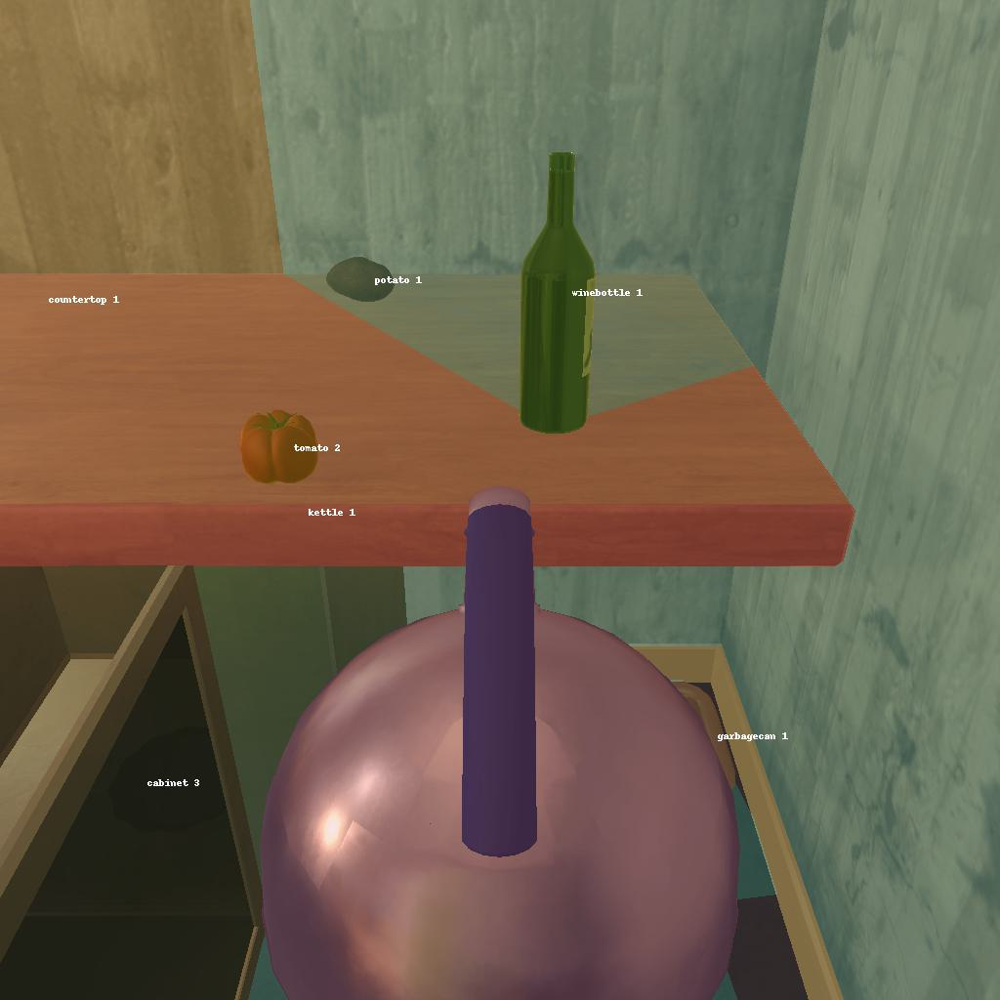

---------------------------------------------------------task: 26---------------------------------------------------------
--------------------------------------------------------------------------------------------------------------------------------------------------------------------
--------------------------------------------------------------------------------------------------------------------------------------------------------------------
Step:--------------------------------------------------------------------------10-------------------------------------------------------------------------------
----------------------------------------
VLM Prompt:
Image1:
Image2:
Image3:
**Instruction**
1. Analyze the provided image to identify all visible household objects, focusing on those relevant to the task description "find two kettle and put them in cabinet."
2. Use the analysis of the image and the task hint "The agent must find an object of the desired type, pick it up, find the correct location to place it, put it down there, then look for another object of the desired type, pick it up, return to previous location, and put it down there with the other object." to answer the question: what is the most reasonable action in the choices for the task description "find two kettle and put them in cabinet"?
4. Decide and write the answer using the template: The answer is: (i): , where i is the real number. If there is no desired object in the image, search every place based on **Initial Observation** to find the object. And if no one is exactly correct, choose a similar answer.
**Initial Observation**
You are in the middle of a room. Looking quickly around you, you can see countertop (1), coffeemachine (1), cabinet (1-4), drawer (1-8), sink (1), sinkbasin (1), garbagecan (1), fridge (1), microwave (1), dresser (1), sidetable (1)
**Answer Choices**
(1): go to countertop 1
(2): go to coffeemachine 1
(3): go to cabinet 1
(4): go to cabinet 2
(5): go to drawer 1
(6): go to sink 1
(7): go to sinkbasin 1
(8): go to garbagecan 1
(9): go to cabinet 4
(10): go to drawer 2
(11): go to fridge 1
(12): go to microwave 1
(13): go to dresser 1
(14): go to sidetable 1
(15): go to drawer 3
(16): go to drawer 4
(17): go to drawer 5
(18): go to drawer 6
(19): go to drawer 7
(20): go to drawer 8
(21): close cabinet 3
(22): put kettle 1 in/on cabinet 3
(23): examine kettle 1
(24): examine cabinet 3
**Answer**
Let's think step by step by following the instructions.
----------------------------------------
----------------------------------------
Original Response:
The task description is to find two kettles and put them in a cabinet. Based on the image provided, we can see one kettle labeled as "kettle 1" on the countertop. According to the initial observation, there are multiple cabinets available, but we need to focus on finding the second kettle before placing them in the cabinet. Since the image shows only one kettle, the next reasonable action would be to search for the second kettle.
None of the answer choices provided explicitly states searching for the second kettle, but the closest action that adheres to the task description and the initial observation would be to check the locations where a kettle might be found, such as other countertops or cabinets not visible in the image. Since the image shows "cabinet 3" open and empty, it would be reasonable to close it before moving on to search other locations. Therefore, the most reasonable action to take next would be to close cabinet 3 and then proceed to search other cabinets or countertops.
The answer is: (21): close cabinet 3. After this, continue to search every place based on **Initial Observation** to find the second kettle.
----------------------------------------
----------------------------------------
>>> Refine Original VLM Response and Get Pure Action: close cabinet 3
----------------------------------------
-----------------------------------------------------------------
Running time: 19.12161874771118 seconds
Total Money: 16.904780000000002
-----------------------------------------------------------------
-----------------------------------------------------------------
Text Observation:You close the cabinet 3.
-----------------------------------------------------------------
UNSUCCEED